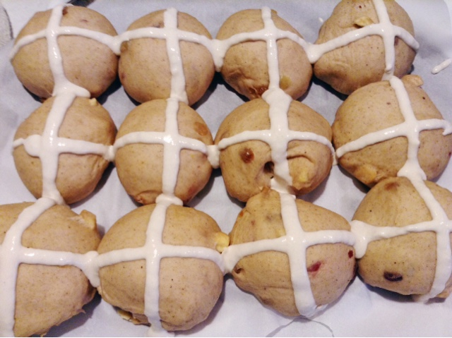

Easter Hot Cross Buns
Makes 12 buns
Modified from here
INGREDIENTS
For the buns
1 1/4 cup warm milk
2 1/4 tsp active dry yeast
500g (about 3 2/3 cups) bread flour
75g (about 1/3 cup) white sugar
1 1/2 tsp cinnamon
1 tsp ground nutmeg
1/2 tsp ground cloves
1tsp salt
zest of 1 lemon
3 tbsp melted butter
1 large egg, beaten
2/3 cup dried fruit (I used Sunmaid Fruit Bits)
Flour to pipe the crosses
2 tbsp golden syrup
DIRECTIONS
For the bunsAdd the yeast to the warm milk, mix together and set aside.
Put the bread flour, sugar, spices, salt and lemon zest in a large mixing bowl and whisk together.
Add in the melted butter, beaten egg and milk yeast mixture. Mix together for a few minutes, just until the ingredients are all incorporated - you should have a soft pliable dough.
Tip out the dough on lightly floured clean work surface. Flatten the mixture and add in the fruit bits to the center and fold the edges over to cover the fruit. Knead the dough for about 10 minutes to incorporate the dried fruit and until the dough is smooth and silky.
Oil a bowl and leave to rise in a warm place until doubled in size. It will take about an hour and a half. The weight of the fruit in the dough will mean that the dough takes a little longer to rise than usual.
Punch the dough down, turn it out onto a clean work surface and knead it for a minute or two and then set back in the bowl again for a second rising. This second rising will probably take a little less time. I left if for about an hour.
Turn out the bowl onto a clean, lightly floured work surface and divide into 12 pieces. Roll each piece into a ball and flatten slightly.
Place the buns on parchment paper on a baking sheet, cover and leave to double in size, about an hour.
Preheat the oven to 400°F.

For the topping
Mix the flour with some water to a thick paste. Pipe across the top of the buns to form a cross on each bun. Bake for 15-20 minutes until pale golden brown.
Melt the golden syrup in a pan and brush onto the buns while still warm to give a sticky glaze. (If you don't have golden syrup, you can use a slightly watered down apricot jam or marmalade for the glaze).
To serve, cut in half and spread on some butter. They also taste yummy toasted with butter too.
Enjoy!
PRINT RECIPE